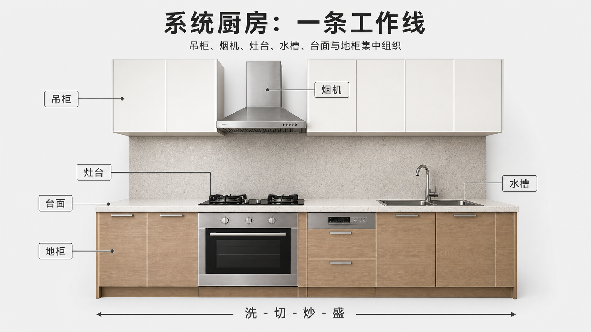
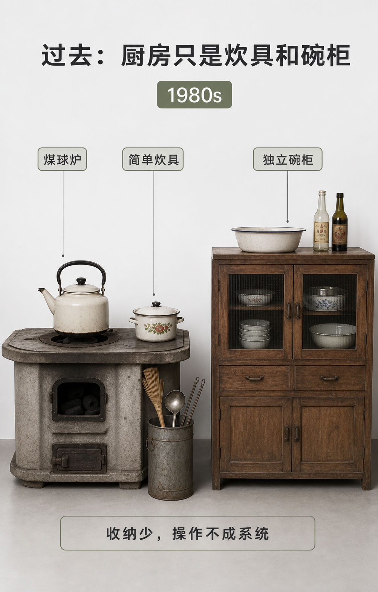
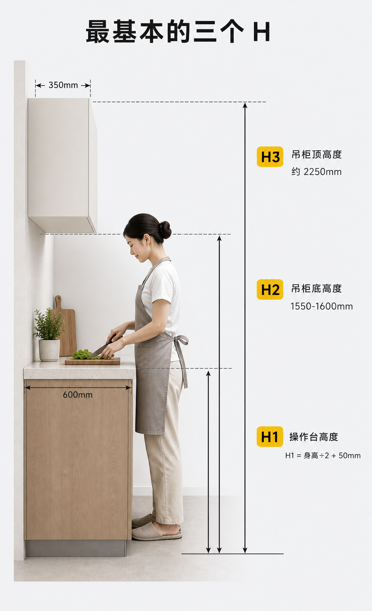
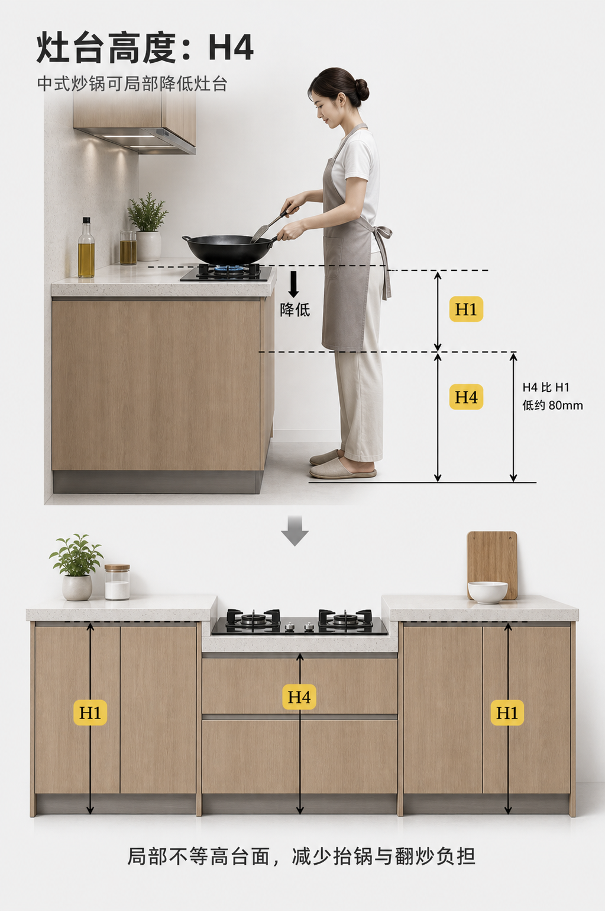

/ U 型不是一定要做 /
先看墙体和门洞条件。厨房接近规则矩形、开门在长边方向、阳台门不阻断台面，才继续讨论 U 型值不值得做。
A kitchen works when washing, cutting, cooking, serving, storage, appliances, and countertop become one system.
很多人一说厨房，就先想柜子够不够、台面多不多、冰箱放哪里。但厨房真正好不好用，核心不是某一个柜子，而是洗、切、炒、盛、收纳、电器和台面有没有形成一套连续系统。
参考《小家，越住越大 1》厨房章节整理，页面文字为董揅设计二次归纳。
DISCOVER MORE

过去的厨房，更多是炉具、碗柜、锅碗瓢盆各放各的。
QUESTION / WORKING SYSTEM
因为做饭不是一个单点动作，而是从清洗、备餐、烹饪到装盘的一条工作线。布局、台面和高度如果没有连起来，柜子再多也会不好用。
柜子好不好用，最后还要落到高度。H1 是操作台高度，H2 是吊柜底高度，H3 是吊柜顶高度；如果常用中式炒锅，灶台高度 H4 还可以局部低于普通操作台。


厨房设计不是把柜子排满，而是把有限面积变成高效率的操作系统。
先看工作线，再看布局条件；先保护黄金区，再补充收纳；最后根据身高和使用习惯确定台面高度。